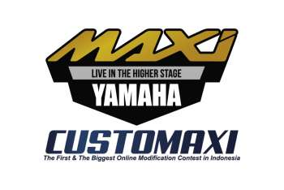
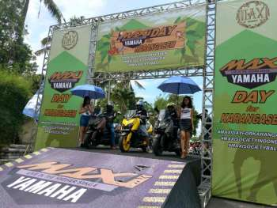
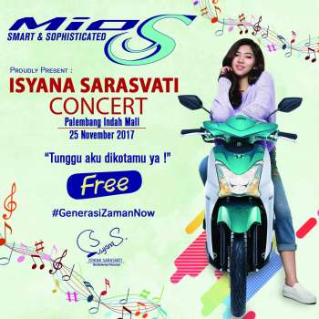

YAMAHA GELAR AJANG ONLINE MODIFIKASI CUSTOMAXI YAMAHA
26 November 2017
Merebak luasnya tren berkendara dan lifestyle ala MAXI YAMAHA (TMAX, XMAX, NMAX dan AEROX 155)...
Read More
PERTEMUAN NASIONAL INSTRUKTUR YRA, YOGYAKARTA JADI AREA TERBAIK
26 November 2017
Gelaran Yamaha Sunday Race seri-4 dijadikan momen berkumpulnya para instruktur safety riding Yamaha...
Read More

UNIKNYA BALI, WARGA LOKAL DAN ASING GANDRUNGI MAXI YAMAHA
26 November 2017
Bali memiliki keunikan tersendiri dalam perkembangan MAXI Yamaha di Indonesia. Motor-motor MAXI...
Read More

WOOHOO!!! INI WAKTUNYA UNTUK KALIAN LEBIH DEKAT DENGAN MIO S DAN ISYANA SARASVATI DI PALEMBANG
26 November 2017
Buat kamu #generasizamannow di kota Palembang, inilah saatnya untuk bisa lebih dekat dengan Mio S dan...
Read More
YAMAHA LUNCURKAN YZF-R25 WARNA DAN GRAFIS BARU
26 November 2017
Yamaha kembali memperbaharui warna dan grafis YZF-R25 ABS dan Non ABS. Penyegaran baru ini tampil...
Read More
TVC MIO S YANG KEKINIAN - KOLABORASI ISYANA X YAMAHA
26 November 2017
Kolaborasi Isyana x Yamaha terekam kembali dalam TVC Mio S yang diluncurkan Sabtu 11 November...
Read More